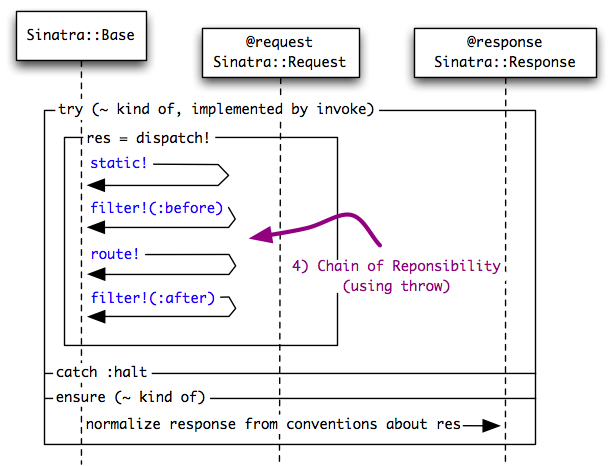

<map name="2-dispatch">
	<area shape=poly coords="475,262,475,290,317,290,317,262,475,262" href="safeState()">
	<area shape=rect coords="87,288,219,307" href="https://github.com/sinatra/sinatra/blob/master/lib/sinatra/base.rb#L660-664">
	<area shape=rect coords="87,244,144,263" href="https://github.com/sinatra/sinatra/blob/master/lib/sinatra/base.rb#L666-683">
	<area shape=rect coords="87,198,227,218" href="https://github.com/sinatra/sinatra/blob/master/lib/sinatra/base.rb#L660-664">
	<area shape=rect coords="87,153,152,173" href="https://github.com/sinatra/sinatra/blob/master/lib/sinatra/base.rb#L739-751">
</map>

